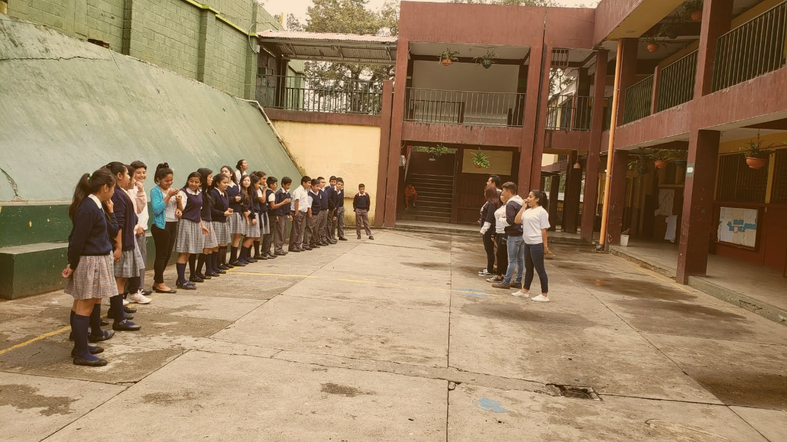
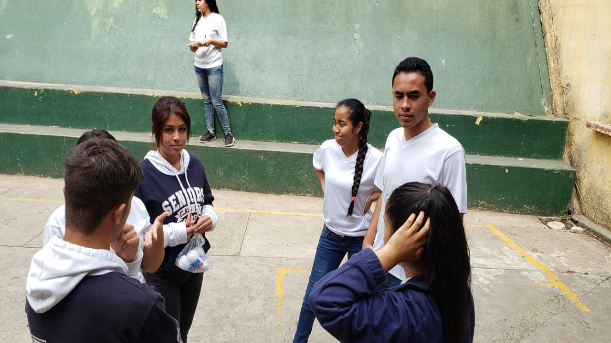
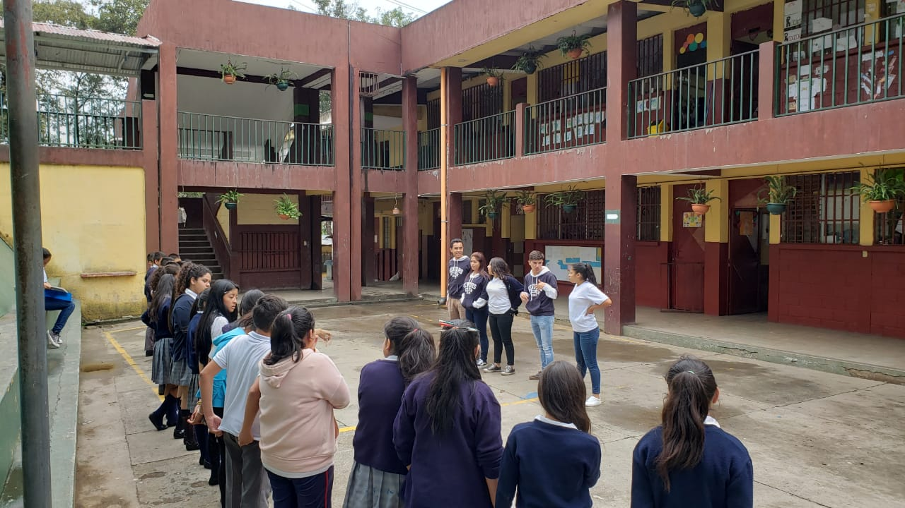
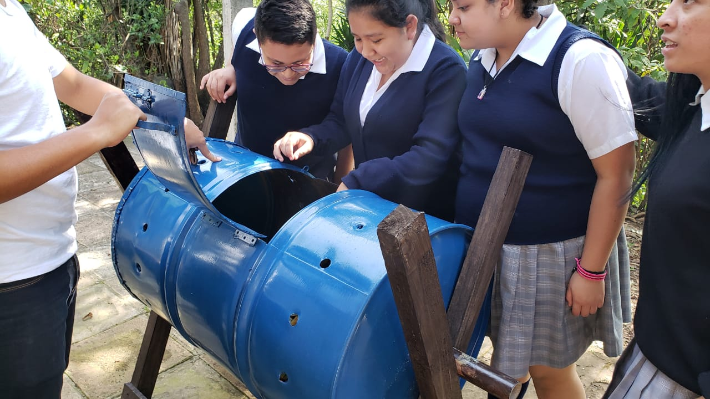
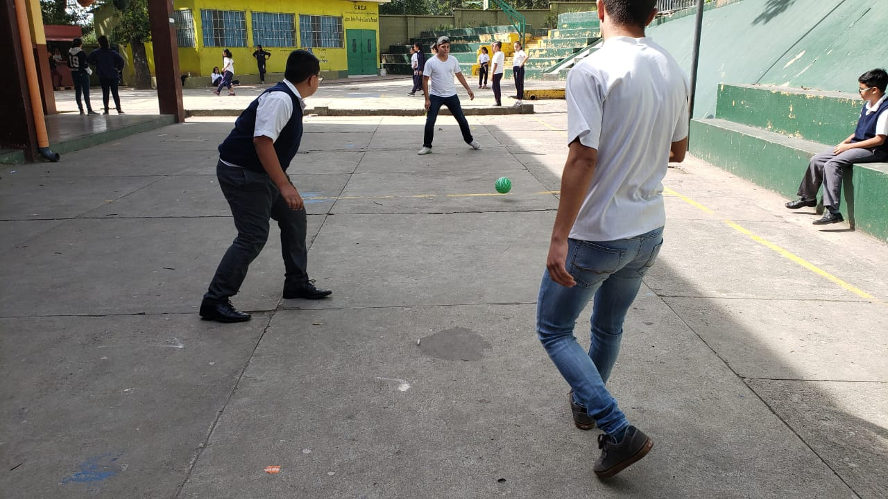

-

Ingresamos a la escuela con un poco de nervios,
llegamos con mucho positivismo por el trabajo que llegariamos a
hacer con los niños.
-

Sentimos olor de alimentos y olor a basura cerca
de las aulas de los niños.
-

Escuchamos a los niños jugar y a las maestras impartiendo
sus clases.
-

Las aulas están creadas de concreto, block y lámina.
Los pasillos son de azulejos y concreto.
-

El ambiente no está limpio, no existe un buen control
en mantener un ambiente limpio y agradable para los niños
y los visitantes.
Existen drenajes, pero están en mal estado acumulan
basura en ellos.
El ambiente es agradable, hay áreas verdes.
No hay ruido de automóviles fuera de la escuela.
No logramos ver a ninguna persona del área de mantenimiento.
-

Los niños tienen áreas verdes son muy agradables para los
niños, se siente tranquilidad.-
Los niños tienen áreas de recreación son bastantes amplias pero
están en mal estado.
-

Las niñas son muy pacíficas pero les encanta hablar entre
ellas y no les importa si el docente está dando la clase.
Los niños prestan atención pero son inquietos y molestan
a sus compañeras. Los docentes dan sus clases, pero no mantienten un control
en el aula.
La administración es muy buena y muy organizada.
-

Los niños cuentan con el servicio de la dirección,
ellos están al pendiente de los niños.
No cuentan con enfermería, solo con un botiquín
en el aula que les corresponde.
Poseen una tienda, agradable pero seria mejor si les vendes
cosas nutritivas.